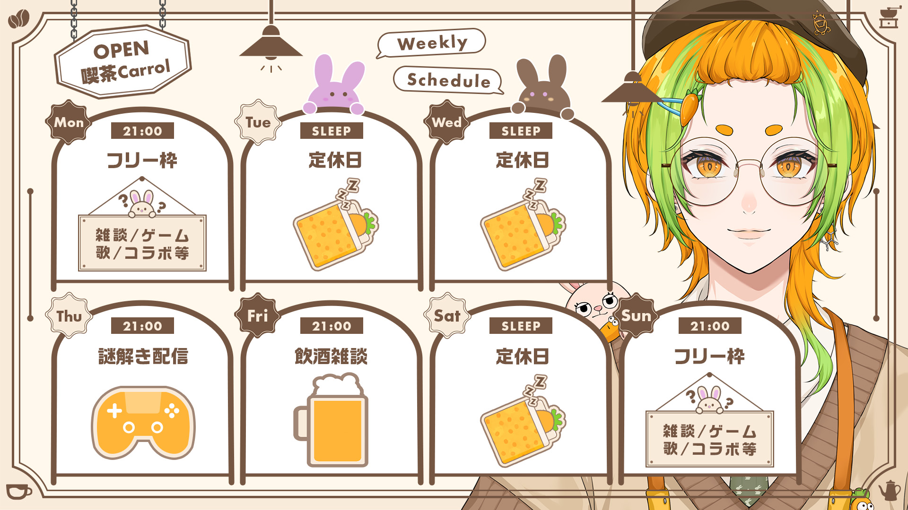
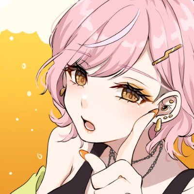
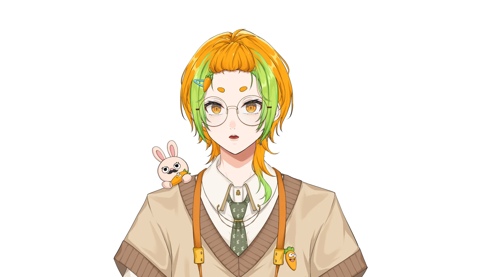

営業スケジュール



お知らせ
Profile

きゃろってぃー / Carroty
喫茶Carrol(きゃろる)専属バリスタ
- 誕生日
- 2001/04/23(おうし座・へび年)
- 身長・血液型
- 170cm・O型
- 出身/在住
- 愛知県/福岡県
- デビュー
- 2026/07/04
- あだ名
- きゃろ・きゃろさん
てぃーさん・にんじん - 挨拶
- ただいま・おはきゃろ・こんきゃろ・また来るね・おつきゃろ
- 営業時間
- 月/木/金/日 21:00〜
(定休日:火/水/土、不定期営業あり) - 好き
- 謎解き/脱出・FPS・RPG・MOBA・鬼畜ゲーム、にんじん・コーヒー・お酒(日本酒)・辛いもの・デザイン・お勉強・筋トレ
- 苦手
- ホラー・甘いもの(生クリーム系。チョコはいける)・じっとすること
- よく使う色
-
#6e482f#755642#a67a5d#ffb537#84896e#e9d2b5 - クリエイター様
-
ママ

パパ
Photos

FA Gallery
いただいたFAを飾らせていただくコーナーです。
いつもありがとうございます……！！
投稿の際は #きゃろラテあーと のタグ付けと
メンションをぜひお願いします！
タグ付きのイラストは
活動に使用させていただく場合があります🙇
掲載の削除希望はお問い合わせよりご連絡ください
デザイン参考資料を見る読み込み中です…
お知らせ
Guideline
喫茶Carrolで、みんなが心地よく過ごすための小さなお願いです。
いつもの席でも、ふらっと立ち寄る日でも、どうぞ気楽にお過ごしください。
嬉しいこと
- 人に優しい、思いやりのある発言
- 初見さんに優しい雰囲気作り(「つ☕」のリアクションもOK)
- 落ちコメOK・挨拶やスタンプ貯めだけもOK・ROM/ROM専もOK
- ご自身の生活を大事にした上で遊びに来てくれること
お控えください
- 人が不快に思う・人が嫌がる発言
- 他の配信者様の配信で脈絡なく自分の名前を出すこと
- 他のリスナーさんとのコメント上での会話・絡み
- (今後)スパチャの誘導や、メンギフの催促
SHARE THE MOMENT
切り抜きについて
楽しかった時間のおすそわけ、大歓迎です。
- 自由にしていただいてOKです
- Twitterに上げるときはタグ付けしてください
- コラボの切り抜きは相手のルールも確認した上で
- 歌枠の切り抜きは著作権の問題があるので基本NGです
- 切り抜き専用チャンネルを作る場合は、一度ご連絡ください
- 将来的な収益化もご自由にどうぞ
FAN ART GUIDE
ファンアートについて
リスナーさんがSkeb・つなぐ等でFAをご依頼することは許可しております!
絶対入れてほしい要素
まろ眉・にんじん要素
できれば入れてほしい要素
肩のうさぎ・ポンパの髪型・髪色、丸メガネ・ネイル(人差し指:オレンジ / その他:黄緑)・にんじんの瞳孔
自由にしていい要素
帽子・服装(コスプレ等)・カメラ・アクセサリー・性別/年齢・ケモ化など
R18作品もOKですが、FAタグの使用はお控えください。
AI学習への読み込みは全面禁止です。AI使用イラストはFAタグの使用禁止・AI使用の明記をお願いします。
Skeb・つなぐ等でのイラストご依頼について
- イラストの使用範囲を明確にお伝えください
- 上記の要素について齟齬のないようお伝えください(スクリーンショットの共有もOKです)
- VTuber本人から依頼の許可が出ている旨をお伝えください
- デザインの参照には固定ツイートをご共有ください
- グッズ販売を含む商用利用まで許可をいただいている場合は、教えていただけると助かります
- 「各種SNSでの投稿」「収益化YouTubeチャンネルのサムネイルでの使用」の許可をいただければOKです
詳しいデザイン参考資料は FA Galleryページ でご覧いただけます。心配な点はいつでもお気軽にご連絡ください。
Commission
「きゃろってぃー」のデザインにご興味を持ってくださりありがとうございます!
VTuberさん向けに、サムネイルやプロフィール画像などのデザイン制作依頼を承っています。
ご依頼の流れ
- ご依頼用フォームより必要事項をご入力
- 3営業日以内に、ご希望の連絡ツールにてご返信
- 内容のすり合わせ後、制作スタート
- 確認・修正を経て納品
お支払い・実績公開について
- お支払い方法:銀行振込(請求書発行)/ ココナラ(手数料+約10%)
- 実績公開:基本的に可(SNS・ポートフォリオ等で紹介させていただきます) / 非公開ご希望の場合は+10%
- 連絡ツール:Discord(おすすめ)/ X・TwitterのDM / メール
Contact
お問い合わせは、
以下のいずれかでご連絡ください。
お問い合わせは、以下のいずれかでご連絡ください。